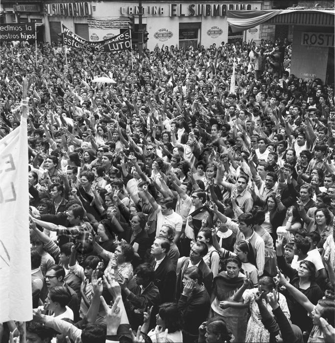
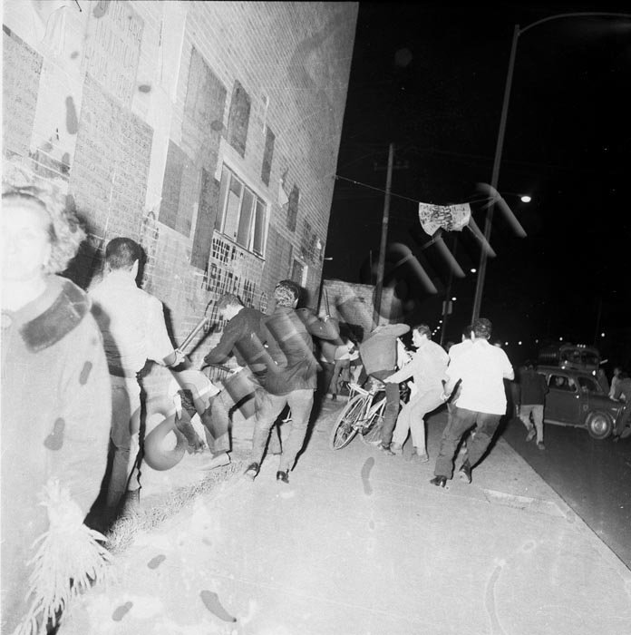
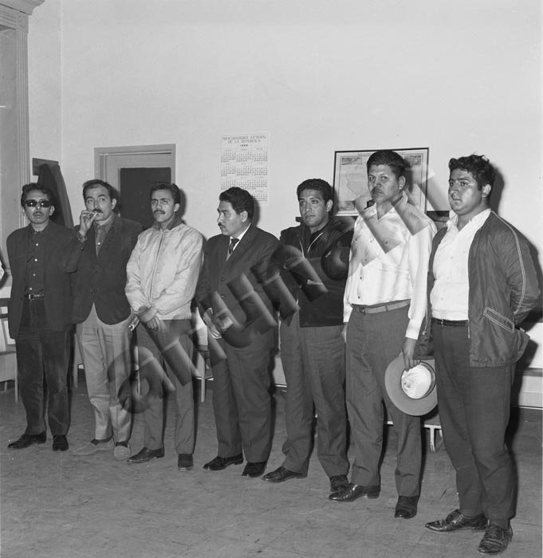

3

6

7

8
El propósito de este sitio web es conservar la memoria de los estudiantes de 1968 y dar a
conocer los hechos previos
y posteriores a la Matanza de Tlatelolco, el 2 de octubre de 1968.
En el cual fallecieron más de 300 estudiantes que luchaban por la democracia,
en contra de la corrupción
y la represión política que ejercía el gobierno del entonces
presidente Gustavo Díaz Ordaz.
Analizaremos diferentes artículos, tanto de la época como posteriores,
para poder examinar los diferentes puntos de vista.
Entre ellos,
analizamos la perspectiva de los diferentes puntos de vista de las personas de esta época,
tanto de las personas que apoyaban al gobierno, como de los que apoyaban a los estudiantes,
con el fin de dar una visión completa de los hechos ocurridos en la Plaza de las Tres Culturas.
------
-----
----
---
--
-
.